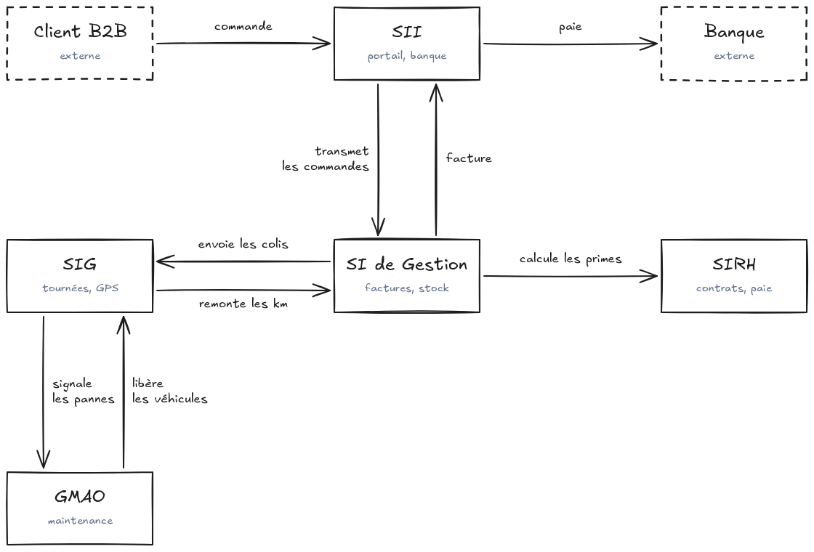
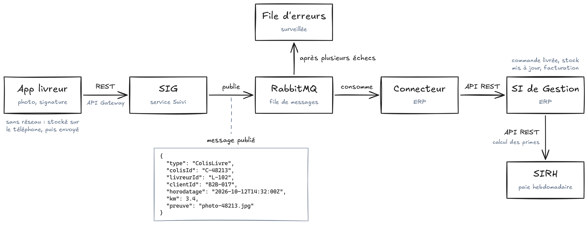
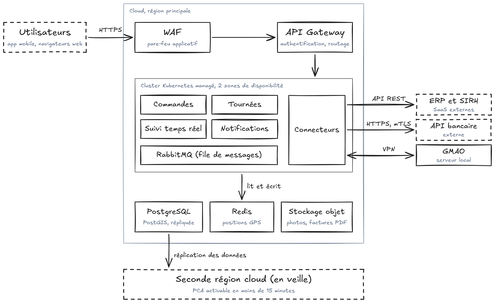

Quel système d'information pour une start-up de livraison urbaine qui a triplé en un an ?
d'activité en un an, pour une entreprise de deux ans.
Un tableau blanc pour les tournées, un classeur papier pour les contrats et un Excel partagé pour tout le reste.
d'erreurs de livraison.


ColisLivre dans RabbitMQ.
Compte dispatcheur piraté par hameçonnage. Téléphone de livreur perdu.
Pic du Black Friday qui sature le service Suivi. Panne d'une zone cloud.
Rançongiciel ou compte administrateur compromis. Suppression par erreur.
Trois niveaux de support, et la file de messages comme solution de contournement.
Ouvre un ticket et qualifie l'incident : qui est touché, depuis quand. Rassure : les livraisons continuent, les factures partiront au rétablissement.
Vérifie le connecteur ERP, la file RabbitMQ et le statut du fournisseur. Ouvre un ticket chez l'éditeur, escalade si le délai est dépassé.
Suspend le connecteur : les messages « colis livré » attendent. Au retour de l'ERP, rejoue la file et vérifie l'absence de facture en double.
Quatre microservices pour les commandes, les tournées, le suivi et les notifications. L'ERP et le SIRH sont pris en SaaS.
API REST entre les systèmes, RabbitMQ pour les événements. Le suivi GPS peut monter en charge au Black Friday sans toucher à la facturation.
Kubernetes et une seconde région, c'est beaucoup pour une start-up de deux ans. La direction exige 99,99 % de disponibilité et une reprise en moins de 15 min. Le cluster est managé pour limiter la charge. Sans ces exigences, nous aurions proposé plus simple.
Merci. Des questions ?